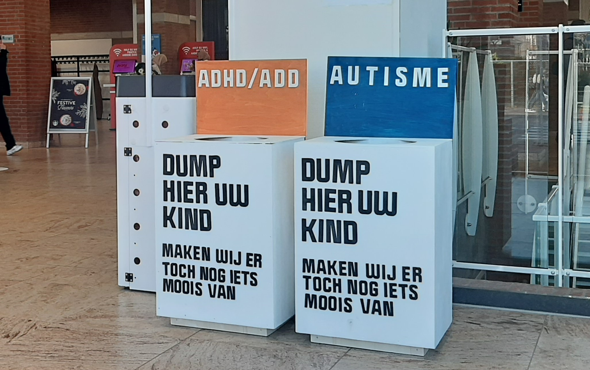
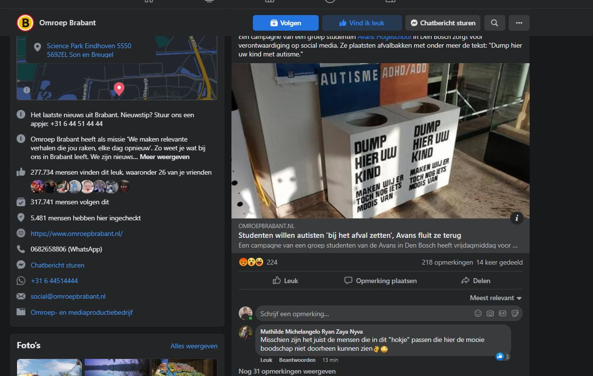
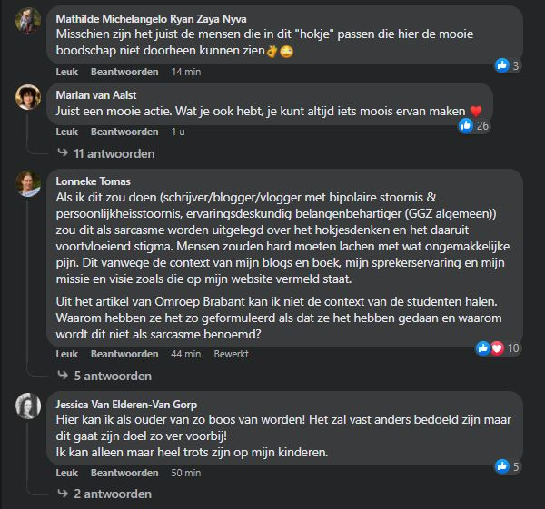
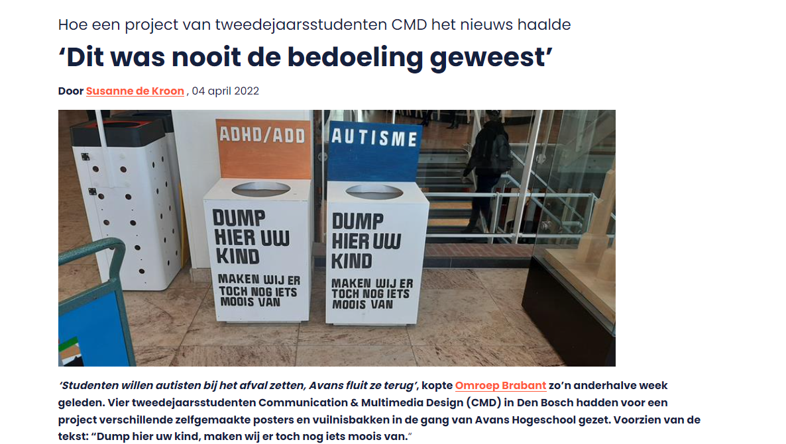
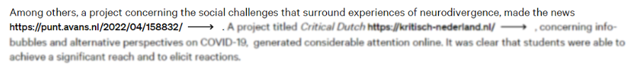
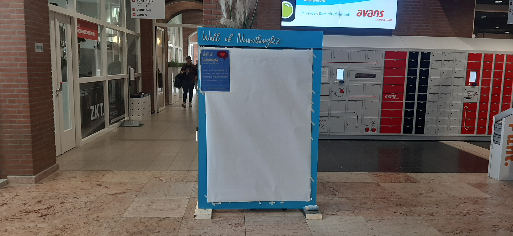
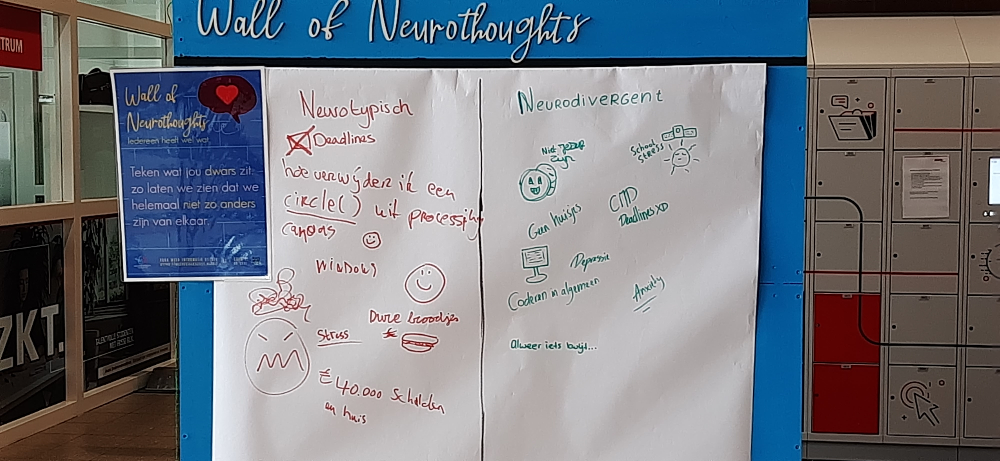
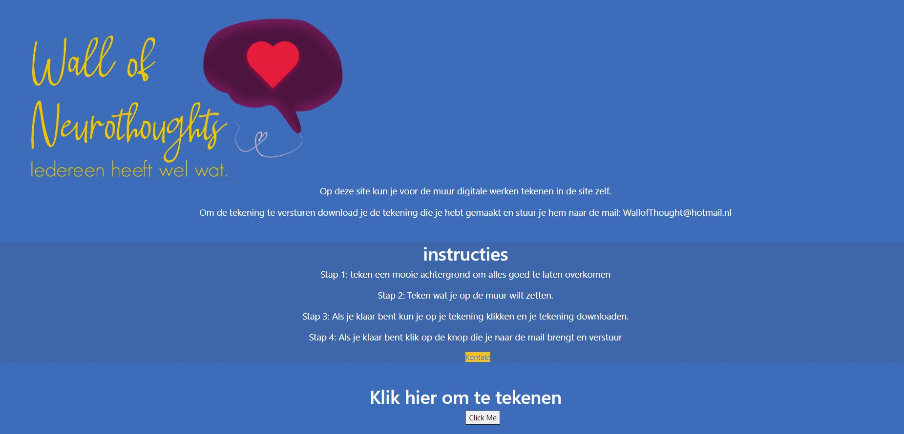
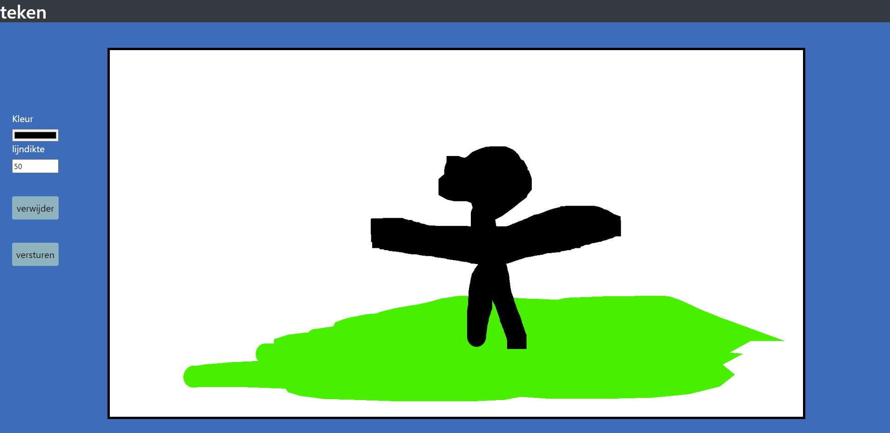

Voor blok 7 moesten we een aanklacht maken voor een huidig probleem in de maatschappij.
Wij kozen voor het onderwerp neurodivergentie omdat we erin geloven dat neurodivergentie
meer aandacht verdient in de huidige maatschappij. Wij maakte drie ontwerpen aan de hand van verschillende richtingen
waarmee een het nieuws heeft gehaald.
Richting 'protest' : Prullenbakken

Foto prullenbakken
De aandacht trekken op een slechte manier.
Ik bedacht tijdens het brainstormen met een teamgenoot een grof idee om neurodivergenten mensen
in prullenbakken te stoppen. Uit onderzoek bleek neurodivergenten mensen meer geld kosten in
het onderwijs en vaak slechter behandeld werden op scholen. Dus waarom gooien we ze niet
gewoon weg als dat zou helpen? Dit is natuurlijk niet serieus maar hiermee willen we mensen
aan het denken zetten over hoe we met neurodivergenten omgaan. Met dit idee gingen we
verder met het maken van de prullenbakken. Tijdens het testen op de eerste dag ging alles
goed en hoorden we positieve feedback en dat mensen er van leerde. De dag erna was heel anders.

Foto Facebook
Omroep Brabant had een artikel geschreven waar de context van ons idee niet in verteld werd.
Dit artikel zorgde voor veel ophef bij Avans, mensen en mogelijke opdrachtgever 'afvalstoffendienst'.
Resultaten

Foto Reacties
Ondanks dat er veel ophef was in het begin kwamen ook vele positieve reacties.
Mensen keken erdoorheen en zagen dat er een positieve boodschap was. Er onstonden
discussies en er ontstond aandacht naar het probleem die wij wilde aankaarten.
Ook kregen we laten nog een bericht dat iemand bij Defensie interesse had in het ontwerp.
We weten alleen niet of dit doorgaat.
Verdere media
We kregen gelukkig ook nog positievere berichten zoals in Punt waar ik een interview mocht houden en een andere teamgenoot ook vroeg.
Daarin was de context beter.

foto Punt
Ook kwam na het project het in de Caradt te staan in een klein stukje. Het leuke was dat het in het Engels is en ook internationaal naar gekeken kan worden.

foto Caradt
Linkjes
Artikel Omroep Brabant
Interview Punt
Stukje in Caradt
Richting 'Verandering in de directe omgeving' : Wall of Neurothoughts

Foto muur

Foto Resultaat
Het idee
Voor een van de andere richtingen wilden we een concept van de andere kant benaderen die een positievere toon heeft en mensen daarmee samenbrengt.
Ik kwam tijdens het bedenken van mogelijke concepten met een idee na inspiratie om een muur
te maken waar neurodivergenten mensen hun emoties en problemen op konden zetten zodat 'normale mensen' leerden over neurodivergenten.
Na het uitwerken met het team en het testen kon uiteindelijk iedereen zijn emoties en problemen erop zetten wat uiteindelijk leek
dat iedereen van elkaar leerde en dat niemand echt 'normaal is'
mogelijke opdrachtgever
Na het testen en de resultaten heb ik contact opgenomen met de Neurodiversity Foundation.
De directeur van de Foundation had een mail teruggestuurt en vroeg of wij met Avans iets wilden opzetten voor
de Neurodiversity Pride Day.
website (niet gebruikt)

Foto main pagina

Foto Resultaat
Ik wilde graag nog een website programmeren en met het idee dat mensen die niet fysiek naar de muur wilden komen ook het digitaal konden doen.
Uit onderzoek en feedback kwam toch er uiteindelijk uit dat het idee van mensen samenbrengen ontkrachtigt wordt als je mensen online laat werken.
Logo door Yente gemaakt na iteratie van mijn logo.
Meer content en mijn proces: